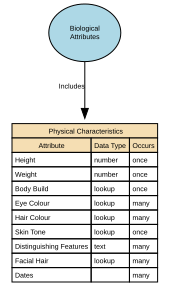

Physical Characteristics
Physical Characteristics refers to observable, measurable, and non‑biometric biological traits of an individual. These features describe physical form or appearance but do not uniquely identify a person on their own. The sub‑domain includes raw descriptive attributes and standardised measurements recorded for classification, profiling, or operational purposes.
Implements Concepts from Person Domain, Concept Model
| Concept | Description |
|---|---|
| Physical Characteristics | Physical Characteristics refers to observable, measurable, and non‑biometric biological traits of an individual. These features describe physical form or appearance but do not uniquely identify a person on their own. The sub‑domain includes raw descriptive attributes and standardised measurements recorded for classification, profiling, or operational purposes. |

Attributes
| Attribute | Description | Data type | Occurs |
|---|---|---|---|
| Height | Height is a measured physical attribute representing an individual’s vertical body length from the soles of the feet to the top of the head. It is a non‑biometric, non‑clinical, descriptive physical characteristic, used for identification support, profiling, equipment fitting, health & safety contexts, and demographic analytics. It is not unique enough to identify a person on its own. | number | once |
| Weight | Weight is a measured physical attribute representing the mass of an individual’s body at a specific point in time. It is a non‑biometric, non‑clinical physiological measurement used for operational safety, sizing, wellness, and descriptive profiling. It cannot uniquely identify a person and must not be treated as a health diagnosis. | number | once |
| Body Build | Body Build (also known as body frame or body shape) is a general, non‑clinical descriptive attribute that characterises the overall physique or structural appearance of an individual. It captures broad physical proportions (e.g., slim, stocky, athletic, broad) or frame types (e.g., small, medium, large frame) for identification support, equipment provisioning, and anthropometric profiling. It is not a health assessment, diagnostic category, or body‑composition measurement. | lookup | once |
| Eye Colour | A visible physical characteristic describing the colour(s) of an individual’s irises. It is a non‑biometric, non‑clinical, descriptive attribute used for identification support, profiling, documentation, and certain operational or compliance contexts. Multiple values may be recorded to support rare but valid cases (for example differing eye colours), without prescribing anatomical detail (such as left/right eye). This attribute is not unique enough to identify a person on its own and does not reveal medical conditions or genetic diagnoses. Tranche 1 does not mandate a controlled value set; standardisation may be introduced in later iterations where supported by use case evidence. | lookup | many |
| Hair Colour | Hair Colour is a descriptive physical attribute representing either: 1. Natural Hair Colour — the genetically determined or typical baseline hair colour; or 2. Current Hair Colour — the individual’s present hair colour, which may be natural or non‑natural (e.g., dyed, bleached, fashion colours). This attribute is non‑biometric, non‑clinical, and used solely for descriptive and operational purposes. Neither natural nor current hair colour may be used to infer health, age, ethnicity, or identity. | lookup | many |
| Skin Tone | Skin Tone is a visible physical characteristic describing the general pigmentation or colour range of a person’s skin. It is a non‑clinical, non‑biometric, non‑diagnostic descriptor captured only for specific, justified operational purposes (e.g., identity support, safeguarding, uniform or equipment contexts). It must be broad, neutral, respectful, and standardised—never evaluative or culturally loaded. Skin Tone cannot be used to infer ethnicity, race, health status, or genetic traits. | lookup | once |
| Distinguishing Features | Distinguishing Features are visible, non‑clinical physical attributes that can help differentiate an individual from others in descriptive or identity‑support contexts. These features are voluntary, non‑sensitive descriptors such as scars, tattoos, birthmarks, moles, or other notable visible characteristics. They must be non‑judgmental, categorical, and minimally descriptive—never detailed, medical, or identifying in a forensic or biometric sense. This attribute supports operational identification, not biometric matching or surveillance. | text | many |
| Facial Hair | Facial Hair is a visible, non‑clinical, non-biometric physical characteristic describing the presence, absence, type, and general style of hair on the face (e.g., beard, moustache, stubble). It is used for descriptive identification, operational contexts, and appearance‑based workflows where relevant. It is not used for biometric identification, profiling, or inference of age, culture, or gender. | lookup | many |
| Dates | Dates for Physical Characteristics specify the time period during which a specific physical characteristic value is valid or actively in use for the individual. This includes when the characteristic was observed, self‑reported, measured, confirmed, or superseded. This attribute set creates a temporal identity record, ensuring accurate history and preventing outdated or inaccurate physical descriptors from being used operationally. Common fields include: * observation_date — when the characteristic was captured * effective_from — start of validity * effective_to — end of validity (nullable if still active) These dates are per characteristic, not global. | structure | many |